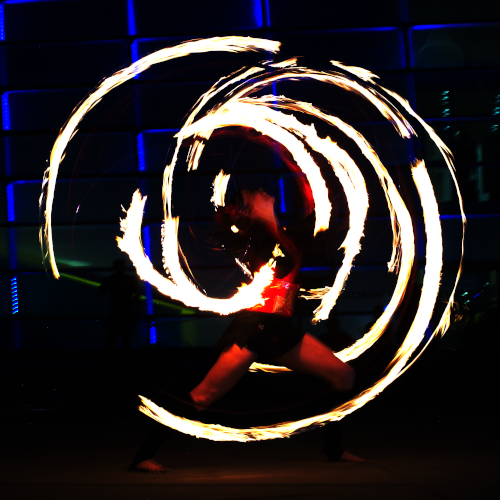

Das Straßenfestival in Linz!
Das Pflasterspektakel ist ein mehrtägiges internationales Straßenkunstfestival, das seit 1987 jährlich im Juli in der oberösterreichischen Landeshauptstadt Linz stattfindet. Das Pflasterspektakel geht auf die Initiative von Siegbert Janko, damals Leiter des städtischen Kulturamtes, zurück, der ein Straßenfest verknüpft mit einem Treffen von lokalen Straßenkünstlern veranstaltete. Beim ersten Pflasterspektakel 1987 musste man die Künstler noch suchen und einladen. Durch das ermutigende Echo der Teilnehmer und des Publikums wurden die Veranstalter zum Weitermachen motiviert, sodass das Festival weiter wuchs und heute als einer der Höhepunkte in der europäischen Straßenkunstszene gilt. 2005, bei strahlendem Wetter kamen erstmals mehr als 250.000 Besucher.
Beim 21. Pflasterspektakel im Juli 2007 traten rund 130 Gruppen oder Einzeldarsteller mit 600 Akteuren aus über 40 Nationen auf und lockten wieder 200.000 Besucher an. Die Darbietungen während des drei Tage dauernden Festivals finden an ca. 40 Plätzen in der Linzer Innenstadt statt und reichen von Jonglage und Akrobatik bis Clownerie und Pantomime, von Straßenmusik bis zum abendlichen Samba-Umzug und nächtlichen Feuershows. So bildete etwa 2006 den abschließenden Höhepunkt eine spektakuläre, mitternächtliche Jamsession bestehend aus mehreren Feuershowgruppen, deren akrobatische Darbietung von einer Electronic- und Didgeridoo-Live Performance musikalisch begleitet wurde. 2019 findet das Straßenkunstfestival bereits zum 33. Mal statt.